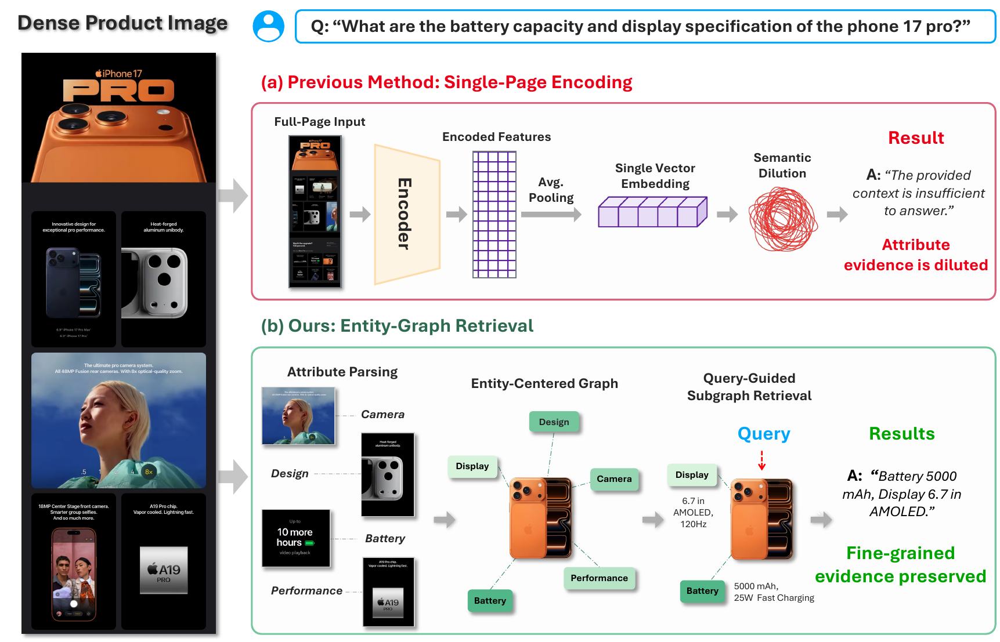
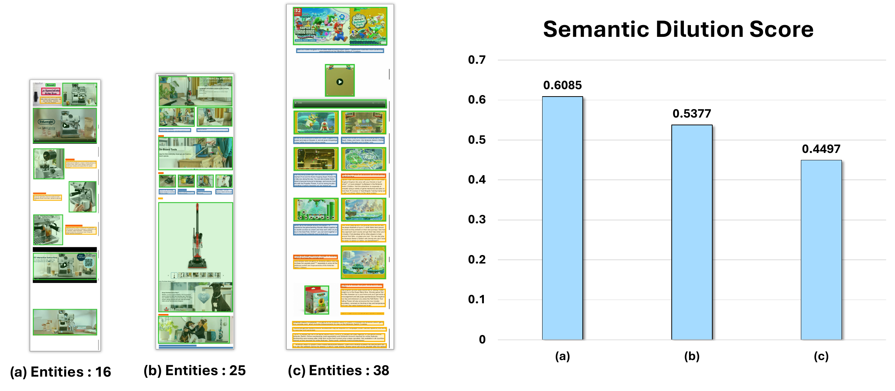
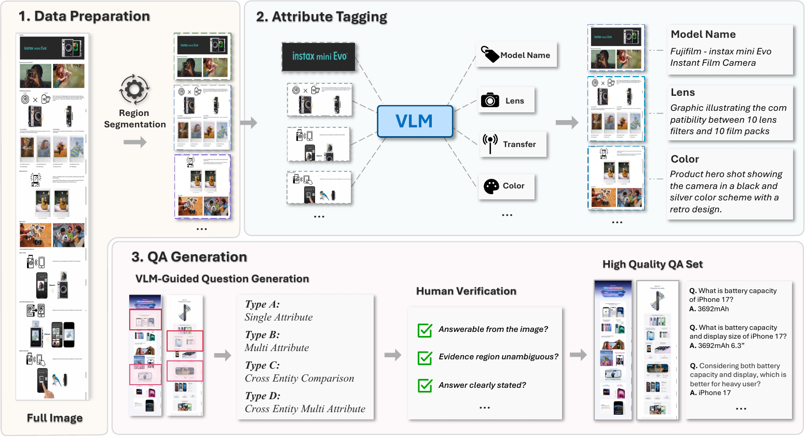
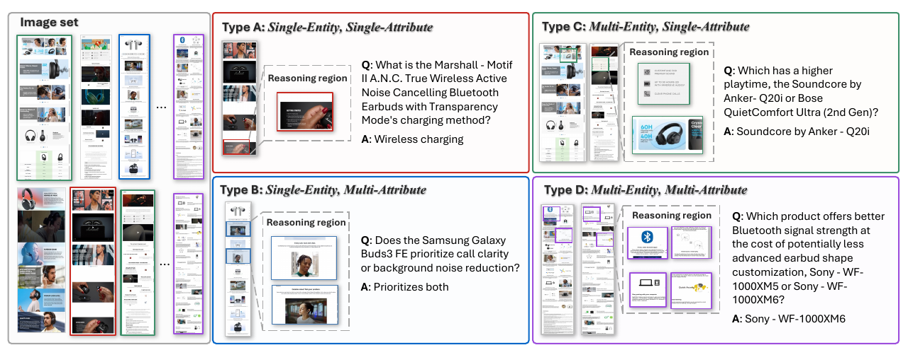
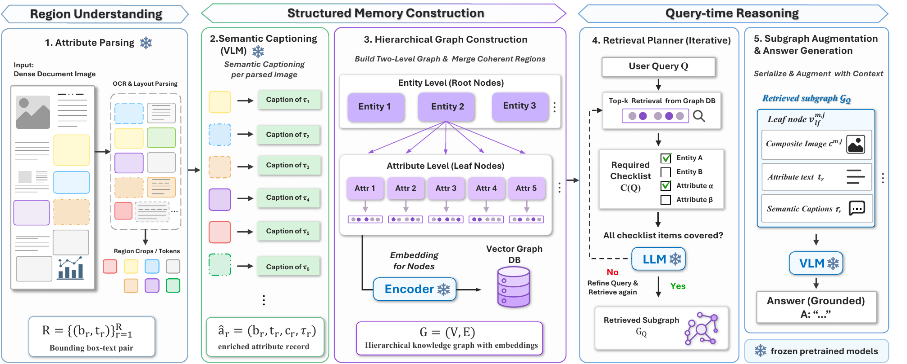

Turning visually dense document images into entity–attribute graphs, so fine-grained evidence survives retrieval.

Dense document images often contain many fine-grained visual and textual entities whose relevance depends on a user query. Standard vision–language retrievers encode cropped regions with a single vector, which can mix distinct entity signals and obscure the evidence needed for fine-grained retrieval. We call this failure mode Semantic Dilution and quantitatively show that it degrades entity-level retrieval as a function of entity density.
To mitigate it, we propose SAGE, a training-free framework that parses semantic entities from dense document images, represents them as hierarchical graph nodes with multi-vector embeddings, and retrieves query-relevant evidence through iterative entity-level subgraph matching. We also introduce DEAR, a dataset of 1,055 query–image pairs sourced from product detail pages, where each query requires retrieving and comparing multiple fine-grained entities from visually dense inputs across four question types of increasing complexity.
Experiments show that SAGE substantially reduces semantic dilution and outperforms patch-level and OCR-based retrieval baselines on DEAR, achieving a Recall@3 of 0.849 and a generation score of 2.746 on multi-entity visual comparison queries.
We formally define semantic dilution as a density-dependent failure mode in dense visual documents and show that increasing entity density degrades entity-level retrieval.
1,055 query–image pairs from product detail pages, where each query requires retrieving multiple specific entities across dense images and comparing the retrieved evidence.
A training-free, entity-centric graph retrieval framework using semantically coherent entities as retrieval units, with iterative subgraph-based evidence retrieval.
When a whole dense page is compressed into one embedding, individual attributes stop being distinguishable — and the denser the page, the worse it gets.
We measure the semantic dilution score δ(I): the average cosine similarity between a full-image embedding and the embeddings of its isolated attribute crops, δ(I) = (1/n) Σk cos(Enc(I), Enc(rk)). A lower δ(I) means the full-image embedding retains less attribute-specific evidence.

Semantic Dilution. The compression-induced degradation of fine-grained semantics that occurs when layout-agnostic crops or patches mix unrelated attributes into a single dense embedding. As entity density increases, target evidence is more likely to be mixed with irrelevant semantic signals, reducing the embedding’s discriminability for fine-grained retrieval and comparative reasoning.
We rank each ground-truth image against all 502 collected images using its question. Across four different encoders, higher region density consistently lowers similarity to the ground-truth image and worsens its retrieval rank.
| Encoder | Sparse (6.8 regions) | Dense (40.3 regions) | ||
|---|---|---|---|---|
| Sim. ↑ | Rank ↓ | Sim. ↑ | Rank ↓ | |
| CLIP | 0.639 | 5.8 | 0.618 (−0.021) | 20.0 (+14.2) |
| Jina-CLIP-v2 | 0.677 | 6.0 | 0.626 (−0.051) | 17.5 (+11.5) |
| SigLIP2 | 0.552 | 13.0 | 0.547 (−0.005) | 24.5 (+11.5) |
| ColQwen | 36.79 | 3.5 | 28.39 (−8.40) | 8.0 (+4.5) |
Question–image similarity and retrieval rank of the ground-truth image among all 502 collected images. Lower rank is better. CLIP, Jina-CLIP-v2 and SigLIP2 similarities are rescaled to 0–1; ColQwen scores retain their original scale.
A diagnostic benchmark for semantic dilution. Every query requires retrieving multiple specific entities from visually dense images and comparing their attributes — within and across images.
Existing document QA benchmarks evaluate retrieval at the page or document level, and multi-entity benchmarks emphasize text-based reasoning. None simultaneously covers visually grounded multi-entity retrieval, dense image inputs, and comparison-oriented reasoning.
| Benchmark | Hops | Dense- Attribute |
Long- Context |
|
|---|---|---|---|---|
| One-Hop | Multi-Hop | |||
| MMLongBench-Doc (2024) | ✓ | ✗ | ✗ | ✓ |
| M3DocVQA (2025) | ✓ | ✓ | ✗ | ✓ |
| UniDoc-Bench (2025) | ✓ | ✓ | ✗ | ✗ |
| M3VQA (2026) | ✓ | ✓ | ✗ | ✗ |
| DEAR (Ours) | ✓ | ✓ | ✓ | ✓ |
DEAR is the only benchmark supporting all evaluation dimensions at once: multi-hop reasoning, dense-attribute understanding, and long-context reasoning.


Direct attribute extraction from one entity, e.g. “What is the earbuds’ charging method?”
Several attributes of one entity must be jointly retrieved and weighed against each other.
The same attribute is compared across entities, e.g. which product has longer playtime.
The hardest setting: multiple attributes of multiple entities, compared and traded off.
| Configuration | # of Record |
|---|---|
| Images | 502 |
| QA pairs | 1,055 |
| Single-image query | 525 |
| Multi-image query | 530 |
| QA types | |
| Type A (Single-Entity, Single-Attribute) | 212 |
| Type B (Single-Entity, Multi-Attribute) | 313 |
| Type C (Multi-Entity, Single-Attribute) | 173 |
| Type D (Multi-Entity, Multi-Attribute) | 357 |
| Question complexity | |
| Extraction-oriented | 534 |
| Reasoning-oriented | 521 |
| Attribute density | |
| Low (0–10) | 5 |
| Medium (11–100) | 392 |
| High (>100) | 108 |
Statistics of the DEAR benchmark.
Five modules, all built on frozen pretrained models — the entire pipeline is training-free.

An off-the-shelf OCR layout parser (PaddleOCR) decomposes each image into fine-grained regions, yielding bounding-box–text pairs plus a visual crop per region for non-textual signals such as icons and diagrams.
Image regions carry no OCR text, so a frozen VLM generates a semantic caption describing what each visual crop represents — producing an enriched attribute record (box, crop, text, caption).
A frozen LLM groups coherent records into attribute-level leaf nodes under entity-level root nodes. Each leaf is embedded by jointly encoding its composite image with its composed text and captions.
Two-stage coarse-to-fine search: top-kr root nodes first, then root-conditioned attribute retrieval, reranked by a weighted root/attribute score — refined iteratively against a query checklist.
The retrieved subgraph is serialized into an ordered multimodal context — entities with their child attributes and visual crops — and handed to a frozen VLM for grounded answer generation.
Key idea. Instead of embedding whole pages or layout-agnostic patches, SAGE embeds only semantically coherent attribute units, and anchors them to the entity they belong to. Root-level anchoring reduces interference from irrelevant regions, while checklist-driven refinement ensures every item the query asks for is actually covered.
A frozen LLM parses the query Q into a required-item checklist C(Q) and verifies whether each item is satisfied by the current retrieval set. If any item remains uncovered, the planner reformulates the query with the missing items and retrieves again — until the checklist is covered or a maximum iteration count is reached.
All methods use the same frozen Qwen2.5-VL-72B generation backbone. Retrieval is Recall@3; generation is scored 0–5 by an LLM judge (GPT-5.4).
| Method | Type A | Type B | Type C | Type D | Overall |
|---|---|---|---|---|---|
| Embedding-based | |||||
| ColPali | 0.364 / 1.313 | 0.220 / 1.333 | 0.313 / 1.824 | 0.246 / 1.724 | 0.272 / 1.566 |
| ColQwen | 0.500 / 2.000 | 0.358 / 1.578 | 0.513 / 2.620 | 0.490 / 2.366 | 0.463 / 2.139 |
| OCR-based | |||||
| PaddleOCR + BM25 | 0.649 / 2.135 | 0.633 / 2.275 | 0.617 / 4.620 | 0.559 / 2.964 | 0.606 / 2.097 |
| PaddleOCR + DPR | 0.325 / 0.700 | 0.206 / 0.806 | 0.234 / 1.291 | 0.160 / 1.754 | 0.217 / 1.182 |
| Caption-based | |||||
| VLM Captioning + BM25 | 0.125 / 2.000 | 0.095 / 2.619 | 0.088 / 2.412 | 0.138 / 2.724 | 0.115 / 2.494 |
| VLM Captioning + DPR | 0.063 / 1.625 | 0.191 / 1.857 | 0.206 / 2.412 | 0.172 / 2.172 | 0.163 / 2.030 |
| Graph-based | |||||
| SAGE (Ours) | 0.948 / 2.419 | 0.927 / 2.787 | 0.766 / 3.321 | 0.718 / 2.800 | 0.827 / 2.804 |
| SAGE† (Ours) | 0.948 / 2.561 | 0.927 / 2.997 | 0.807 / 3.019 | 0.788 / 2.512 | 0.849 / 2.746 |
Retrieval and generation performance on DEAR, reported as retrieval / generation. Generation is evaluated by LLM-Judge on a 0–5 scale. † denotes adaptive top-k enabled.
Takeaway. SAGE improves retrieval across every question type, reaching an overall Recall@3 of 0.827 — and 0.849 with adaptive top-k, alongside the best generation score of 2.746. The gains are largest on Type C and Type D, exactly the queries that need evidence from multiple entities.
The same pipeline and modules, applied unchanged to two other visually dense document collections, using Recall@5 on questions requiring fewer than five supporting documents.
| Dataset | Method | Recall@5 | Gen. Score |
|---|---|---|---|
| UniDoc-Bench (Finance) | ColPali | 0.6806 | 3.0615 |
| ColQwen | 0.7745 | 3.0718 | |
| SAGE (Ours) | 0.8067 | 3.1949 | |
| SAGE† (Ours) | 0.8114 | 3.2205 | |
| M3DocVQA | ColPali | 0.5644 | 2.7414 |
| ColQwen | 0.5540 | 2.8966 | |
| SAGE (Ours) | 0.6098 | 3.6034 | |
| SAGE† (Ours) | 0.6598 | 3.8621 |
Entity-level evidence transfers to document collections beyond product detail pages.
NA, SA, TR and IR denote node aggregation, subgraph augmentation, two-stage retrieval, and iterative refinement.
| ID | NA | SA | TR | IR | Type A | Type B | Type C | Type D | Overall |
|---|---|---|---|---|---|---|---|---|---|
| (a) | 0.429 / 2.244 | 0.390 / 2.314 | 0.165 / 2.207 | 0.097 / 2.068 | 0.338 / 2.150 | ||||
| (b) | ✓ | 0.597 / 2.221 | 0.596 / 2.401 | 0.554 / 2.924 | 0.500 / 2.422 | 0.553 / 2.501 | |||
| (c) | ✓ | ✓ | 0.597 / 2.311 | 0.596 / 2.227 | 0.554 / 2.598 | 0.500 / 2.169 | 0.553 / 2.297 | ||
| (d) | ✓ | ✓ | ✓ | 0.948 / 2.419 | 0.927 / 2.787 | 0.766 / 3.321 | 0.718 / 2.800 | 0.827 / 2.804 | |
| (e) | ✓ | ✓ | ✓ | ✓ | 0.948 / 2.561 | 0.927 / 2.997 | 0.807 / 3.019 | 0.788 / 2.512 | 0.849 / 2.746 |
Each entry is reported as retrieval / generation. The proposed modules are complementary, jointly mitigating semantic dilution and improving multi-entity comparison.
If you find this work useful, please consider citing:
@inproceedings{kim2026sage,
title = {SAGE: Semantic Attribute Graphs for Multi-Entity Visual Retrieval},
author = {Kim, Yongjoo and Kwon, Mincheol and Choi, Seonga and Lee, Minseung
and Oh, Kyeong-Jin and Lee, Hyunyoung and Choi, Yunsu and Lee, Jungbeom},
booktitle = {Proceedings of the 2026 Conference on Empirical Methods in
Natural Language Processing (EMNLP)},
year = {2026}
}